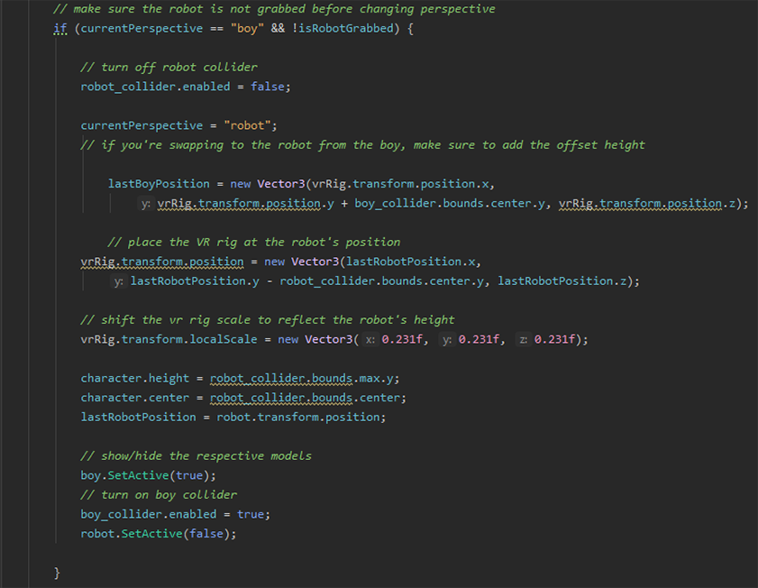

Category: Term Project
Time Out!
- Start - End Date: February 2021 - April 2021
- Tools used: Unity, C#, Oculus VR SDK
- Roles: C# programmer and Unity developer.
“
"Time Out!" is an exploratory Virtual Reality experience where the player plays as a child trying to collect his toys scattered throughout the house and escape from his mom's watchful eyes.
Sneak, hide and move around the house to find and put your toys back in your toy chest!
”
Introduction
"Time Out!" is my first venture into the VR programming side of Unity. The goal of this project was to create an enjoyable game and fun experience in Unity using 3-D and VR by allowing the player to explore a world beyond their own. My role in this project was to program the necessary interactions and player mechanics, as well as to oversee the other members' contributions by implementing them into Unity and making them connect with one another as intended by our interaction goals.
Milestone 1: VR Rig implementation and interaction (February)
My first task in the project was to create a working VR Rig and test out the many possible mechanics that the player could play around with. Using C# and Unity, I implemeted a camera system and VR setup that would allow our players to change perspectives, from a child perspective to a toy robot perspective, as guided by our initial design for "Time Out!". After the initial VR rig was setup and the player was able to look around, see and move their controllers, the next step was to create simple interactables that the player could test with. The very first interactions that I programmed into the project was a simple teleportation that would activate upon the upwards flick of the right joystick (similar to the controls of Half-Life: Alyx), as well as a simple grab and throw ball that could be activated by hovering the controller over the ball.
Once these initial interactions were implemented and tested to work properly, the next step was to create and tune the perspective switching between the child perspective and the robot perspective. By pressing the Y button on the left controller, the player should be able to teleport to the other model's position and see the world as if the player was of that particular size. Furthermore, the player would also be able to teleport in the space without issues. However, due to time constraints and issues surrounding the fine-tuning of the perspective switch, I was unable to create something polished enough without glitches for it to be implemented in our final game. As such, the team made the difficult decision to shelve the feature and pivot towards something that featured the child perspective only.

A code snippet of the perspective shifting script
Another code snippet of the perspective shifting script
Milestone 2: Pivoting and polishing the player's perspective (March)
Next, after the team had made the choice to focus solely on the child perspective and scrap the robot perspective, I made my goals to reflect that change. In this milestone, my goals were to brainstorm and implement interactions that might work in our game environment, which was created during the two milestones. First, I used the teleportation area mechanic to implement a way for the player to reach up to higher surfaces by using other objects (such as chairs or rubbish bins) as stepping stones, stacked upon one another. To do this, two separate colliders were created on the different objects, one to act as a grabbable interactor and another as the teleport pad.
After the 'climbable' objects were done and implemented properly, the next idea to implement was the doors. Using a hinge joint and an interactable door knob, the player could pull or push the door open/close. Issues I faced here was that the door collider seemed to work incorrectly, where it would occasionally either clip into the wall, the player could clip out of the door or the player would collide with the door and be unable to open correctly. After many unsuccessful attempts to change the collider area of the door or work through different workarounds, I ultimately made the decision to make the doors static and part of the environment itself.
Milestone 3: End Goals and Final Implementation (April)
In the final milestone, I worked to implement the player's objectives, as well as simple AI pathing for the mom model, which would act as a moving obstacle for the player in the living room. First, I implemeted the player's objective by creating a script that would count the number of toy cars that the player has collected and direct the game to the end screen when the player has placed all the cars into the chest. Next, I also added the different toy cars in a variety of locations, some of which my teammates chose the locations for in order to create a challenge.
For the AI pathing and behaviour of the mom character, I used Unity's NavMesh system to create a moveable path for the character to navigate through the obstacles and reach the player or other distracting objects. After the path was implemented, the next step was to create an area that would detect the player or the player's toys, designated separately from the collectible toy cars that the player needed to collect. I used a simple List system where objects would be added/removed from the stack in an orderly fashion in order to create the behaviour allowing the mom character to move and 'pick up' the objects one by one. This allowed for the player to throw toy objects at the mom's area of effect so that the mom would be distracted and not chase the player down. If the player gets unfortunately caught by the mom character, the system would force the player to restart at their starting position in their room.

{kind=link}
{kind=link}
Reflection
Ultimately I think the project was a great success, despite the time that we had working on it. The game's goals were mostly realized and the VR rig was implemeted and worked as intended. However, with more time, I definitely could have worked more on the different interactions, as well as fixed the mechanic of the perspective switching.